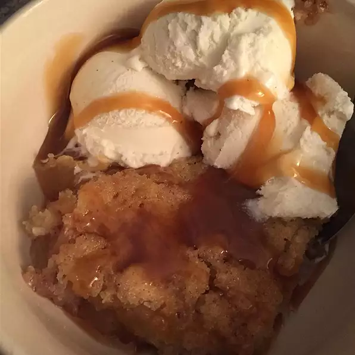

Apple Pudding

Description
This is a wonderful old family recipe served warm, topped with vanilla ice cream.
Ingredients
- 0.5 cup butter, melted
- 1 cup all-purpose flour
- 1 cup white sugar
- 2 teaspoons baking powder
- 1 cup milk
- 2 cups chopped and peeled apples
- 0.25 teaspoon salt
- 1 teaspoon ground cinnamon
Directions
- Preheat the oven to 375 degrees F (190 degrees C).
- In a small baking dish, combine butter, sugar, flour, baking powder, salt, and milk until smooth.
- In a microwave-safe bowl, combine apples and cinnamon. Microwave until apples are soft, 2 to 5 minutes. Pour apples into the center of the batter.
- Bake in the preheated oven 30 minutes, or until golden.